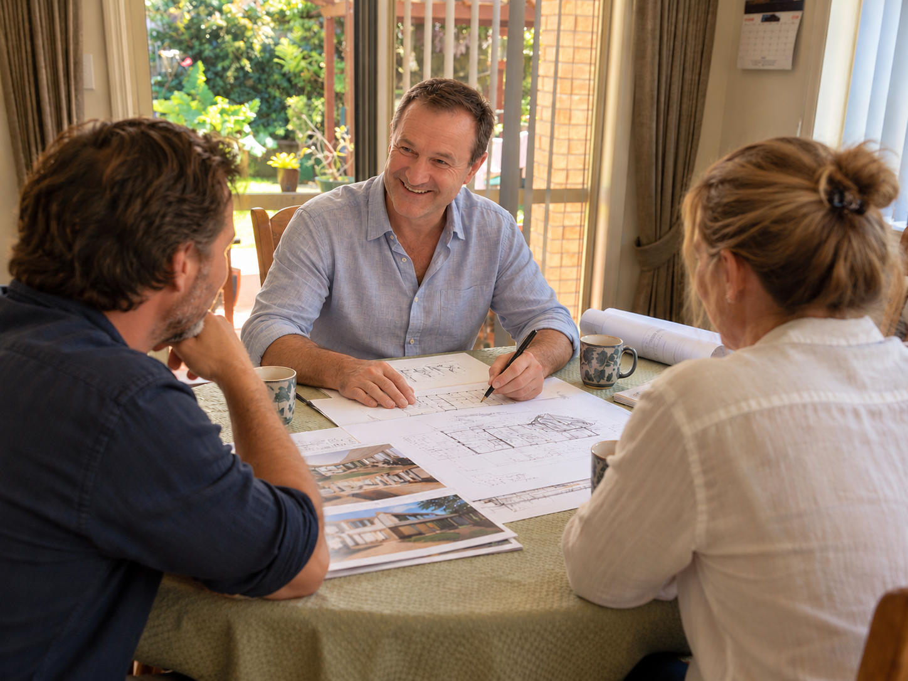
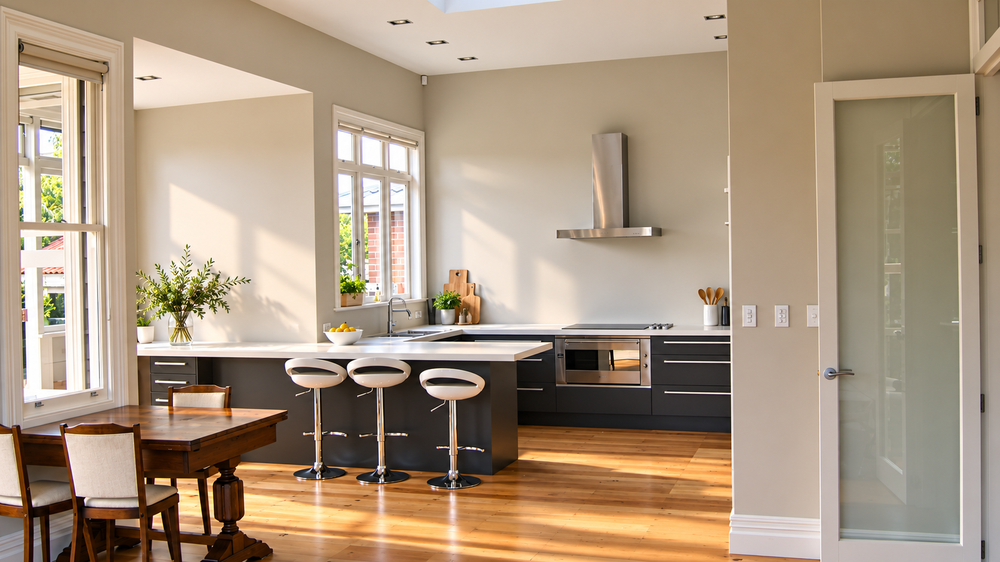
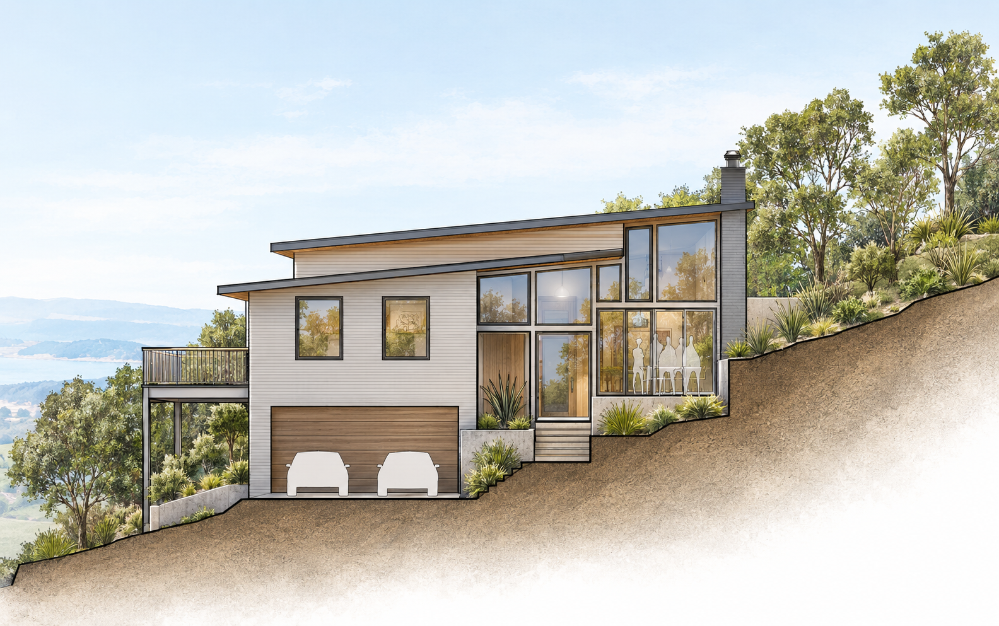
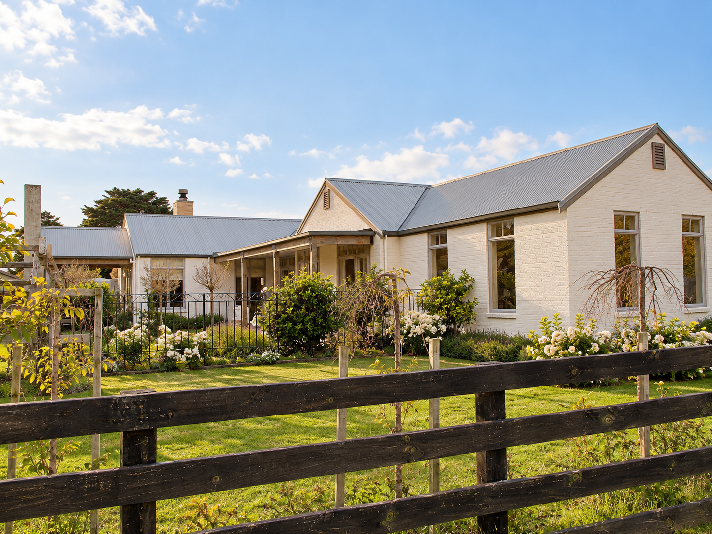
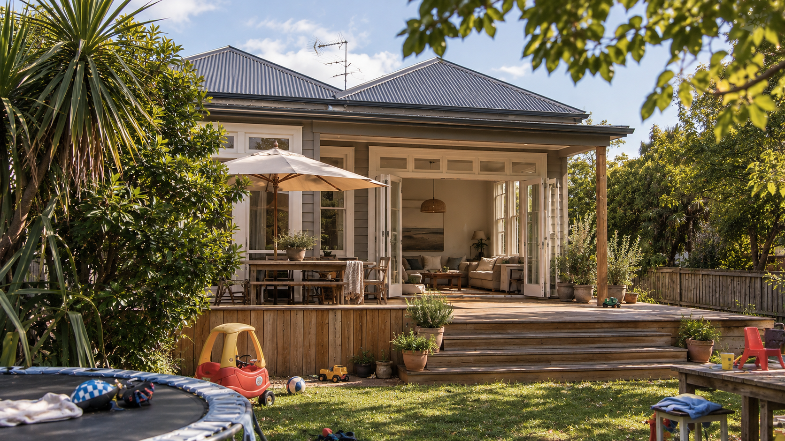
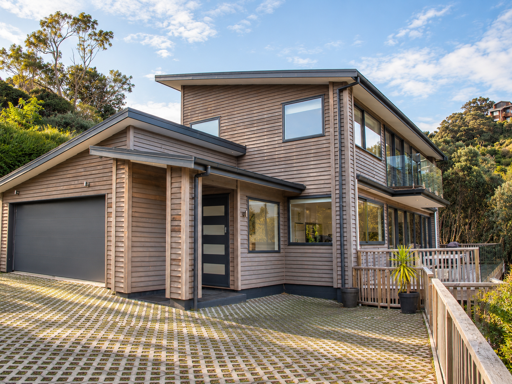
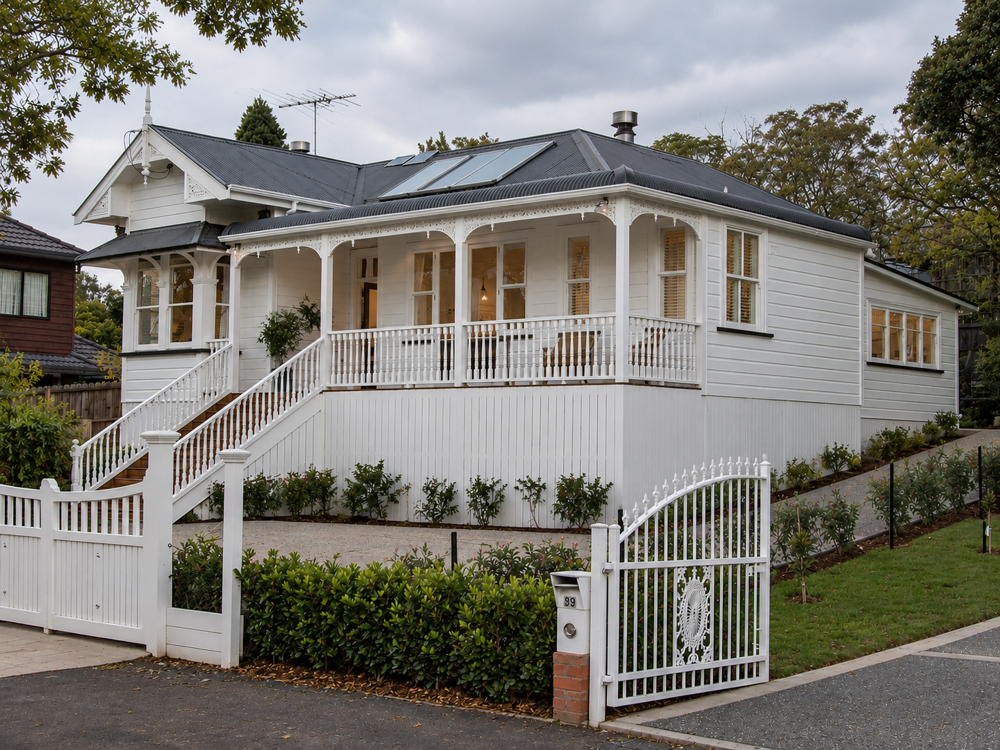

Hi, I’m David.
I’ve been designing residential architecture for over 25 years.
What I enjoy most about it is being trusted by my clients with their needs, hopes, dreams and budgets, and eventually designing a home that gives them enjoyment to live in.
There are always site constraints, planning rules, building regulations and budgets to work within. I see these as part of the puzzle — working out how all the pieces can come together to allow a design to emerge that balances what is possible and buildable, without losing sight of your needs and how you want to live.
My skill is sitting with you, explaining all these different aspects, and then getting creative together. Idea by idea, sketch by sketch, an architectural design emerges balancing all these things to create something that is uniquely yours.

Designing idea by idea, sketch by sketch.What does a good home feel like?
I’ve had the privilege of working with some prominent New Zealand architects in Auckland. One thing I noticed, time and time again, was a simplicity within their work — even when the architecture itself was beautifully sophisticated. There was a balance to it. Everything seemed to influence everything else, and somehow all those individual decisions came together to create a sense of harmony.
I really appreciated those years of drawing their designs and being involved in turning ideas and developing them into drawings and seeing the actual buildings. I was learning by being part of the process — seeing how a drawing, a detail or a material became something real.
Over the years, working on my own projects, I’ve become much more conscious of the balance I’m trying to create for my clients.
I think about light, space and the way spaces connect with one another. I think about the aesthetics and the tactile quality of materials, as well as the character of the site and its surrounding landscape. None of these things exist in isolation.
When they work together, they create something more than a collection of rooms or a beautiful object. They create a feeling. And that feeling is something the people who live in the home get to experience every day.

“It's about finding the right balance of light, warmth and shade for the way a home will actually be lived in.”
I think about how the sun moves across the site and how the house can respond to it — welcoming the morning light, making the most of winter warmth, while providing shade from the stronger afternoon sun when it's needed.
Sometimes it's as simple as having a warm, sunny place to sit with a cup of tea and enjoy the view.

“When you walk into a room, you can feel its size and scale almost instantly.”
I think about how each space should work, how people move between them, and how the proportions and arrangement of a home can make it feel generous without wasting space.
It's about exploring what the better outcome might be within the space and budget available.

“One of the first things I do is go to the site and get a feel for it.”
Every site has its own opportunities and challenges — the sun, views, wind, privacy, landscape and the way the land meets the building.
I also listen to what the owners have noticed from living there, because they often understand things about the site that aren't immediately obvious.
The design grows from exploring these possibilities, while finding thoughtful ways to work with the constraints. The best designs feel as though they belong where they are.

“Materials can give a space a feeling before you even touch them.”
Timber brings warmth, brick feels solid and grounded, while plasterboard provides a quiet, neutral background. Flooring also changes how a room feels, both visually and underfoot.
The balance of different textures and qualities creates a rhythm throughout a home, giving each space its own character.
With an alteration, there is another layer to consider. Sometimes an existing home has a timeless quality worth keeping. The challenge is to add what is needed for modern living while respecting what is already there — allowing the old and new to sit comfortably together.

“Good design is about making sure the money is spent in the right places.”
After many years of designing, I've developed a good feel for where spending can make a real difference — and where it may not.
Sometimes that means making the most of what already exists, avoiding unnecessary structural changes and investing in the things that matter most. Other times, it means simplifying construction while putting more thought into space, light and connection.
The aim is to bring the budget, practical requirements and design together, so the money is working hard for the people who live there.
The design becomes something we discover together.
I like involving you in the design process, rather than taking the brief away and coming back with a finished drawing.
I spend time developing ideas, exploring possibilities and thinking through how everything fits together. Then we can share the screen and look at the design in 3D, so you can see the house taking shape — the proportions, the spaces, the connections and how it sits on the site.
This is where it gets interesting. We can move things around, try a few different ideas and see what happens.
Plans and elevations are important, but they can be difficult to understand when you're not used to reading architectural drawings. Working in 3D means we can explore the design together and talk about what we are actually seeing and feeling.
This way of working lets you see how your ideas become part of the design. Together, we can explore the possibilities, find the right balance and make thoughtful decisions about how your home comes together.
“For me, that’s one of the most enjoyable parts of designing: having an idea, drawing it, looking at it together, changing it, and seeing what emerges.”
✎ The design becomes something we discover together.
Selected projects
A selection of residential projects exploring: light, space, site, aesthetics, and budget.

AUCKLAND VILLA REFURBISHMENTVision, character, lifestyle
Steve and Jo were looking for a lifestyle change in Matakana. They imagined a French-inspired country home — somewhere relaxed and rustic, with room for their children, space to entertain and a strong connection to the outdoors.
Their inspiration came from magazine images of exposed timber trusses, open fireplaces, brick gable ends and the character of traditional French country homes.
The challenge was to capture that feeling while creating a home that was comfortable, practical and enjoyable to live in every day.
Covered verandahs outside the bedrooms and generous outdoor living spaces helped bring the house into the landscape, while the materials and detailing created the rustic character they were looking for.
As Steve and Jo put it:
“David totally ‘got it’ — the house was exactly what we had in mind.”
They were so pleased with the result that they planned to work with me again on their next project.

AUCKLAND VILLA REFURBISHMENTReworking what already exists
Mel and Andy’s villa had previously been divided into two homes. They wanted to bring it back together as a single family home, while working within a tight renovation budget.
Rather than adding more building, we looked at what was already there and reworked the layout.
This created an additional bedroom and improved the flow between the kitchen, dining and living spaces, with a strong connection through to the sunny backyard.
The renovation respects the character of the original villa while making the home work for modern family life.

AUCKLAND VILLA REFURBISHMENTSite, views, constraints, family
Dennis and Carol wanted a modern, low-maintenance beach house where their grown children and grandchildren could come together, while making the most of the sea views.
The steep site brought its own challenges, including geotechnical and foundation considerations, protecting large native trees and accommodating an onsite wastewater system.
The response was a two-storey, mono-pitch home that worked with the slope rather than fighting it.
Open-plan living, large windows and two separate lounges provide plenty of space for family gatherings, while keeping the house simple and easy to maintain.
The finished home sits comfortably among the trees and makes the most of its coastal setting.
As Dennis and Carol put it:
“The finished product met all our needs, with very few queries from the builders — David was the right choice for our project.”

AUCKLAND VILLA REFURBISHMENTCharacter, budget, thoughtful alteration
Sarah and Jonathan, a couple with a young family, needed more space in their Mt Eden villa — a larger family room and kitchen, a new ensuite and laundry.
They had already explored plans with another architect, but were concerned about the cost and amount of work involved.
The challenge was to find a way to give them what they needed without losing the character of the original villa.
Rather than starting again, we looked carefully at what was already there. By incorporating the existing 1920s lean-to into the new living space, adding a new bullnose verandah and paying close attention to the detailing, the new work could sit naturally alongside the original house.
The result was more space and better functionality, while retaining the character that made the villa worth keeping.

Thinking about building or renovating?
I'd love to talk.
I'm happy to come out to your site for a free initial consultation. We can have a look around, talk about what you're hoping to achieve and identify opportunities or issues that might influence the design.
Bring your ideas, even if they're still a little rough, or pictures of other projects. We can talk them through, look at the site together and start to explore what might be possible.
I'll bring my experience and ideas too. From there, we can begin a design process of exploring, testing and refining, finding the right balance between what you want, what the site offers and what works best.
And ultimately, creating a home that feels right and is a pleasure to live in every day.